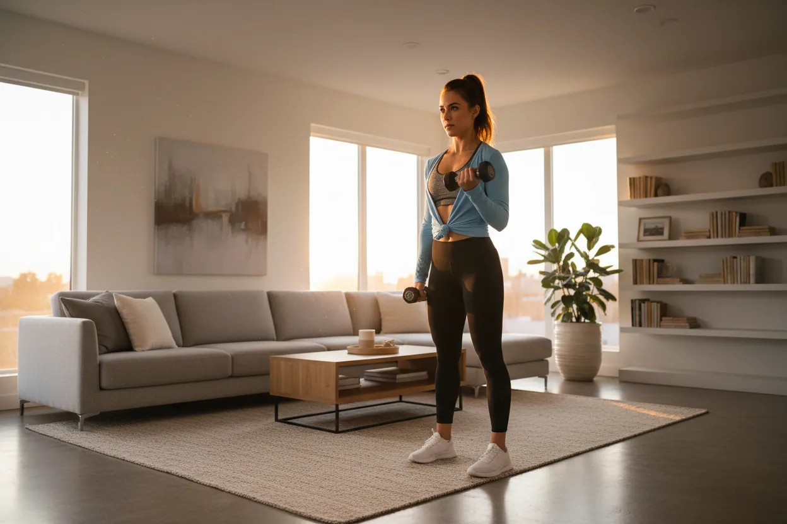
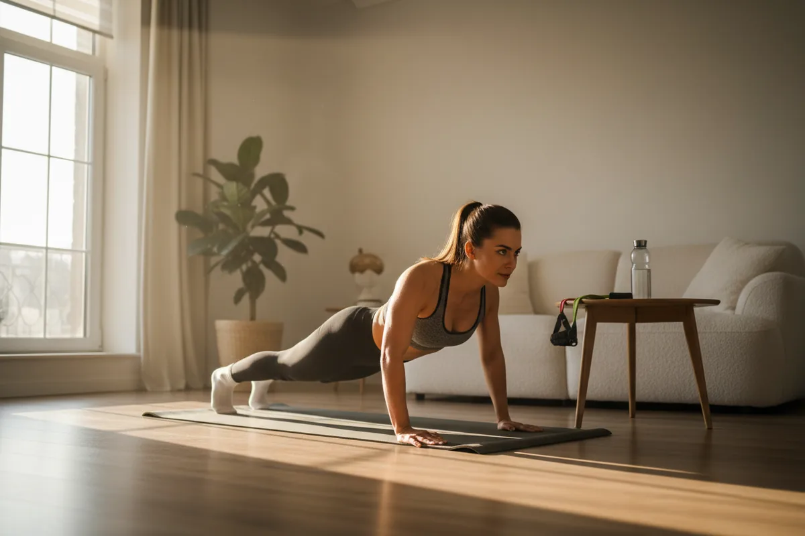

How Do I Build a Consistent Workout Habit When I'm Always Tired After Work?
Feeling drained after work? You don't need more motivation—you need a smarter system. This guide shows you how to build a consistent workout habit even on your most exhausted days, using the 5-minute rule, habit stacking, and movement snacks.

How Do I Build a Consistent Workout Habit When I'm Always Tired After Work?
If you finish your workday feeling drained, unmotivated, and mentally exhausted, you're not alone. For many adults over 30, the idea of working out after work feels overwhelming—even unrealistic. You tell yourself you'll start tomorrow, but tomorrow comes with the same fatigue.
Here's the truth:
You don't need more motivation—you need a system that works even when you're tired.
This guide will show you exactly how to build a consistent workout habit when you're always tired after work, using practical, low-effort strategies that fit real life. No extremes. No unrealistic expectations. Just sustainable consistency.
Quick Answer
If you're too tired to work out after work, stop trying to fix the tiredness and shrink the workout instead. Commit to five minutes, in clothes you laid out that morning, before you sit down. Five minutes done beats forty-five minutes skipped, and it's the version of the habit that survives a bad day.
Why You Feel Too Tired to Work Out After Work
Before fixing the problem, you need to understand it.
1. Mental Fatigue Is Real
After a full day of:
Decision-making
Meetings
Problem-solving
Your brain is exhausted—even if your body isn't.
This makes starting a workout feel harder than it actually is.
2. Energy Drops in the Evening
Your natural rhythm causes:
Lower energy after 3–6 PM
Reduced motivation
Increased desire to rest
This is normal—not a failure.
3. You're Expecting Too Much From Yourself
Many people think:
Workouts must be long
They must be intense
They must be perfect
This creates pressure → which leads to avoidance.
The Real Shift: Stop Relying on Motivation
If you wait until you feel like it, you won't be consistent.
Instead, build a system where starting is easy, even when you're tired.
The 5-Minute Rule That Changes Everything
This is the most important strategy.
Lower the Entry Barrier
Your only goal: I will work out for 5 minutes. That's it.
No pressure to finish
No expectation of intensity
Just start
Why It Works
Reduces resistance
Tricks your brain into action
Builds momentum
Most of the time, once you start—you continue. And if you don't? You still win.
Build a Routine That Requires Zero Thinking
Decision fatigue kills consistency.
Use the Same Workout Every Day
Instead of planning, use one simple routine and repeat it daily. Want to add resistance without a full gym? A Dumbbell Weight Set with Vertical Rack stores neatly at home and lets you progressively challenge yourself as you get stronger.
Example:
Squats
Push-ups
Plank
Jumping jacks
No decisions = no excuses

Keep It Short and Predictable
Your routine should take 10–20 minutes max, be easy to remember, and require no equipment. This removes friction completely.
Attach Your Workout to Existing Habits
This is called habit stacking.
Link It to Something You Already Do
After brushing teeth → 5-minute workout
After work → before shower
During TV → movement during ads
Why This Works
Eliminates planning
Turns workouts into automatic behavior
Reduces reliance on willpower
Redefine What Counts as a Workout
Small Workouts Are Powerful
10 minutes daily = 70 minutes weekly
Builds consistency
Improves energy over time
Movement Beats Perfection
Even stretching, walking, and light exercises count. Consistency always beats intensity.
Use Movement Snacks on Low-Energy Days
Some days, even 10 minutes feels like too much. That's where movement snacks come in.
What Are Movement Snacks?
Short bursts of activity: 1–3 minutes, spread throughout the day.
Examples
10 squats every hour
1-minute plank before dinner
Push-ups after a meeting
A few minutes on a Fitness Trampoline — low-impact, fun, and surprisingly effective for boosting energy mid-day
Why They Work
Reduce stiffness
Keep energy flowing
Maintain habit consistency
This is how you stay consistent—even on your worst days.
Fix the After Work Trap
Don't Sit Down Immediately
Once you sit, energy drops and motivation disappears. Instead, start your workout immediately after work or change into workout clothes right away.
Use the Before Shower Rule
Your trigger: Work ends → workout → shower. No delay. No decisions.
Make Your Environment Work for You
Prepare in Advance
Keep workout clothes visible
Set up your space — a Folding Exercise Mat (2 Inch Thick) rolls out in seconds and gives you a dedicated workout surface that signals your brain it's time to move
Remove barriers
Make It Easy to Start
If starting takes effort—you won't start. Your goal: start in under 30 seconds.
Build Identity, Not Just Habits
Shift Your Identity
Instead of: I need to work out. Think: I'm someone who moves daily—even when tired.
Why This Matters
Identity drives behavior
Behavior becomes automatic
Consistency becomes natural
Common Mistakes That Keep You Stuck
Mistake 1: Waiting for Energy
Energy often comes after movement—not before.
Mistake 2: Doing Too Much Too Soon
Starting with long workouts leads to burnout. Start small → build gradually.
Mistake 3: Skipping When Tired
This reinforces inconsistency. Instead, do a shorter version and keep the habit alive.
Mistake 4: All-or-Nothing Thinking
Miss one day → quit entirely. Instead, focus on showing up. Progress over perfection.
A Simple Weekly Plan You Can Follow
Structure
3–4 days: 10–20 minute workouts
2–3 days: movement snacks
1 day: rest or light stretching
Why This Works
Reduces pressure
Supports recovery
Builds long-term consistency
What Happens When You Stay Consistent
After a few weeks, you'll notice:
More energy (not less)
Improved mood
Better sleep
Increased confidence
The hardest part is starting. After that, it gets easier.
The Real Goal: Make It Too Easy to Fail
Success doesn't come from discipline—it comes from design. Your system should work on low-energy days, require minimal effort, and be easy to restart.
"Even when I'm tired, I do something small." That's how consistency is built.
Want a structured workout you can follow on those tired days? Read: Most Effective 20-Minute Home Workout for Busy Adults Over 30
Looking for a simple plan that fits around a full-time job? Read: How Can I Stay Fit at Home With a Full-Time Job and No Free Time?
Ready to upgrade your home gym setup with the right equipment? Read: How to Stay Fit at Home With a Full-Time Job — Realistic Plan for Busy Adults Over 30
Struggling to build the habit itself? This guide breaks it down: How to Build Healthy Daily Habits With No Time
Final Thoughts: You Don't Need More Energy—You Need a Better System
If you're always tired after work, it doesn't mean you can't build a workout habit. It means you need lower expectations, simpler routines, and smarter systems.
Start with 5 minutes. Remove friction. Stay consistent. That's enough.
Because consistency—not intensity—is what actually creates results.
Frequently Asked Questions
How do I stay motivated to work out when I'm tired?
You don't. Motivation is the first thing fatigue takes, so a habit that depends on it fails exactly on the days you needed it. Replace motivation with a decision you already made: same trigger, same clothes, same five-minute minimum, no negotiation at 6 PM.
Is it bad to work out when you're exhausted?
Light movement when you're mentally drained usually helps — walking, mobility, easy strength. Genuine physical exhaustion, poor sleep for several nights, or illness is different: that's a rest day, and taking it is part of the system, not a failure of it.
Should I work out in the morning instead if evenings never work?
Try it for two weeks before deciding. Morning training removes the whole problem of a day that drains you — but only if you can protect your sleep. Waking up an hour earlier and losing an hour of sleep trades one form of tired for another.
How long until working out after work stops feeling so hard?
Usually two to three weeks of showing up at the minimum level, and it gets easier because the decision disappears, not because you get more energy. The energy improvement comes later.
What if I only manage two workouts a week?
Two a week, every week, for a year is a real training habit. Most people don't fail at four sessions a week — they fail at four for two weeks and then zero. Pick the number you can hit on your worst week, not your best one.
(Affiliate links below — I only recommend products I genuinely believe in. Purchasing through these links supports this blog at no extra cost to you.)
Here are the top tools to help you build a consistent workout habit: